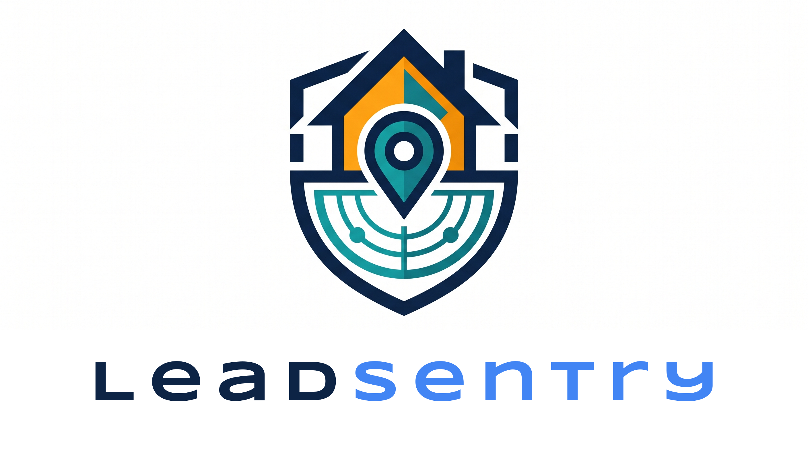

LeadSentry
Know which door to knock on first.
A childhood lead-exposure risk triage agent built for the Mireye Build Challenge. LeadSentry combines Mireye's physical-world data with US Census housing-age data to rank addresses by risk, draft follow-up actions, and show its work with every citation.
What it combines
Mireye's catalog covers hazards, utilities, and parcel boundaries, but does not include
housing age. LeadSentry joins Mireye's tract_geoid with US Census ACS Table B25034
(Year Structure Built) to compute pre-1980 housing share, the backbone of CDC/HUD lead-risk models.
| Score component | Weight | Source |
|---|---|---|
| Pre-1980 housing share | 0-50 | Census ACS B25034 (joined on Mireye tract_geoid) |
| Legacy contamination | 0-30 | Mireye EPA SEMS, ACRES, RCRA, UST Finder |
| Water service gap | 0-20 | Mireye EPA CWS Service Areas V3.0 |
Bands: 0-30 low, 31-60 moderate, 61-100 priority.
How it works
- Accept an address, a list of addresses, or a full ZIP code.
- Fetch Mireye facts and join Census tract housing-age data.
- Compute a deterministic, fully cited 0-100 risk score.
- Let an LLM reason over data quality and decide the action.
- Write the action to an outreach letter or dispatch CSV.
Key capabilities
ZIP-level screening
Score all tracts in a ZIP cheaply first, then decide where to spend the expensive per-address budget.
Agent + rule baseline
Every report shows what the rule baseline would do and exactly where the agent upgraded or downgraded it.
Ground-truth validation
Correlate ZIP-mode scores against real NYSDOH childhood blood-lead testing outcomes.
Offline fallback
No API key? The pipeline falls back to clearly labeled, deterministic rule triage and still produces a complete report.
Privacy redaction
Public-facing reports can replace street numbers and coordinates with placeholders while preserving the score.
Model portability
Works with any provider the Vercel AI SDK supports via LLM_MODEL=provider:model.
Who pays
State and local health departments, EPA Lead and Copper Rule Improvements compliance teams, and water utilities currently stitch this triage together by hand across siloed GIS layers, ACS tables, and county PDFs. LeadSentry collapses it to one call.
Try it
npm install
cp .env.example .env
npm start -- --zip 14213 --deep 5
Tokenless demo: npm run demo